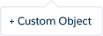

<div class="row monitor-height add-an-object">
  <div class="col-lg-12 monitor-height">
    <div class="row monitor-height">
      <hotspots-container>
        <wizard name="monitor" on-finish="finishedWizard()">
          <wz-step>
            <div class="step step-0">

            </div>
          </wz-step>
          <wz-step>
            <div class="step step-1">
              <div class="click-box active" ng-click="Next()"></div>
            </div>
          </wz-step>
          <wz-step>
            <div class="step step-2">
              <div class="click-box" ng-class="{active:!button.show}" ng-click="ToggleButton()"></div>
              
            </div>
          </wz-step>
          <wz-step>
            <div class="step step-3" ng-class="{active:!label.active}">
              <form class="form form-horizontal">
                <div class="control-group">
                  <label for="name" class="control-label">Label </label>
                  <div class="controls">
                    <input autocomplete="off" type="text" name="name" id="name" ng-model="customobj.name" class="text" maxlength="80" ng-class="{active:label.active}" li-autofocus="wizard.stateIndex == 3">
                  </div>
                </div>
              </form>
            </div>
          </wz-step>
          <wz-step>
            <div class="step step-4">
              <div class="click-box active" wz-next></div>
            </div>
          </wz-step>
          <wz-step success="true">
            <div class="step success">
              <li-center>
                <p>
                  
                </p>
                <h2>Success!</h2>
                <p>
                    You just created your first object to capture <i>customer insights</i> inside Salesforce! Now let’s integrate some real insights into your object.
                </p>
                <p>
                  <a ui-sref="heroku-connect" li-autofocus="wizard.stateIndex == 5" class="btn btn-rounded active">Continue</a>
                </p>
              </li-center>
            </div>
          </wz-step>
        </wizard>
      </hotspots-container>
    </div>
  </div>
</div>
